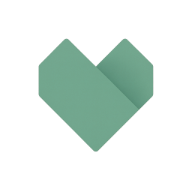

Softer Software
« Software was invented to be 'soft.' It was intended to be a way to easily change the behavior of machines. If we'd wanted the behavior of machines to be hard to change, we would have called it hardware. » — Robert C. Martin, Clean Architecture, 2017
Le numérique a transformé notre société en profondeur. Mais il aide encore peu là où les besoins
sont les plus réels. Aujourd'hui, un logiciel est souvent :
- vite abandonné, faute d'avoir été conçu pour durer : un gaspillage que l'IA accélère encore ;
- financé par un modèle économique qui ne respecte pas les personnes ;
- éloigné de ce dont ses utilisateurs ont vraiment besoin ;
- trop coûteux pour le grand public et les associations.
Un logiciel peut pourtant être vraiment « soft » : facile à adapter et à réutiliser, comme il
était censé l'être dès l'origine.
Vision
Avec des logiciels vraiment « soft », on peut créer, avec et sans IA, des outils qui répondent précisément aux vrais besoins.
Benjamin Layet, plus de 15 ans d'expérience dans les solutions logicielles maintenables.
© 2026 Softer Software. Pour un numérique plus humain et accessible.
Softer Software
“Software was invented to be ‘soft.’ It was intended to be a way to easily change the behavior of machines. If we’d wanted the behavior of machines to be hard to change, we would have called it hardware.” — Robert C. Martin, Clean Architecture, 2017
Digital technology has deeply transformed our society. But it still does little where needs are most
real. Today, software is often:
- quickly abandoned, because it was not built to last: a waste that AI only speeds up;
- funded by a business model that does not respect people;
- far from what its users actually need;
- too expensive for the general public and charities.
Yet software can be truly “soft”: easy to adapt and to reuse, as it was always meant to be.
Vision
With truly “soft” software, we can build, with and without AI, tools that precisely meet real needs.
Benjamin Layet, over 15 years of experience in maintainable software solutions.
© 2026 Softer Software. For a more humane and accessible digital world.